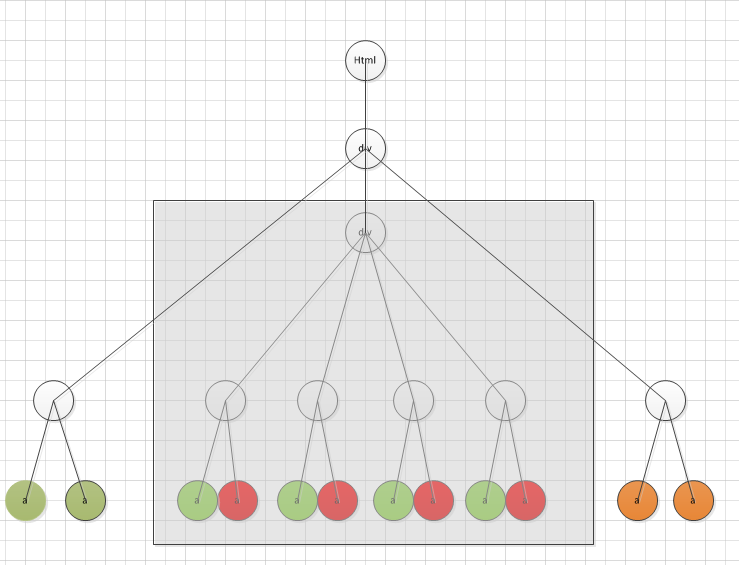

搜索引擎结果自动化抽取通用算法
回顾了下2011年开发的元搜索自动抽取组件，当时的定位是全自动通用。算法适用于所有搜索引擎和新加的微博检索，或者说类似结构的网页，因为业务比较专一吧，效果还是不错的，准确率召回率均超过95%。大概总结下:-)
代码请移步到我的github https://github.com/nanjunxiao/Arise
算法介绍

如上图大致是一个检索结果页面的DOM树结构，算法大致流程如下：
找到所有锚文本链接
进行分组（Xpath相同的锚文本链接）
求出每组的最小父块(最小父节点子树)，找出字符数超过body子树字符总数一半的最小父块，这时可能有多个最小父块，找子树最小的（即Xpath路径最长的），即html-…-div-…-div。这之后可能还有多个相同的最小父块，这时的最小父块就为数据区域块，如图阴影区域。需要记录下最小父块为数据区域块的链接组和其在链接组中的位置的对应关系。
对最小父块是数据区域块的链接组求出平均锚文本链接长度（文本链接比），最长的即为记录锚文本链接，比如绿色文本链接比大，绿色的就为记录锚文本链接
求记录锚文本链接相对数据区域块的最大父节点，即数据区域的第一层孩子节点，作为数据记录块。
找到数据记录块后，此处利用第一个和最后一个传统数据记录进行扩展，可以识别出其中的新型数据记录。
（想用标签名、class属性识别新型数据记录，很难对所有搜索引擎都适用，从而做成通用的）
数据记录块生成子树，抽取所需元信息
这里强调下3/4的顺序，由于右侧广告推广的文本链接比可能也很大，通过3可以去掉右侧广告噪音的影响。
性能指标
准确率/召回率都超过95%
平均处理速度10ms/page
后记
由于当时的定位是全自动通用,所以本算法采用了启发式规则。
如果现在重做，我可能会直接使用类似scrapy的xpath配置文件，毕竟短平快；或者复杂点利用记录的父/子/左右兄弟节点位置/标签/字数等属性构造特征，直接二分类来搞。